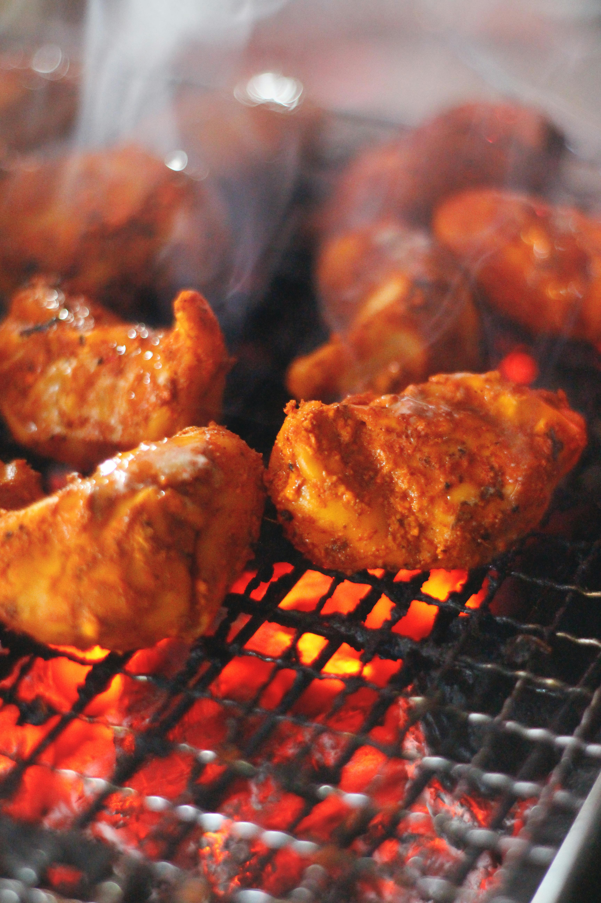
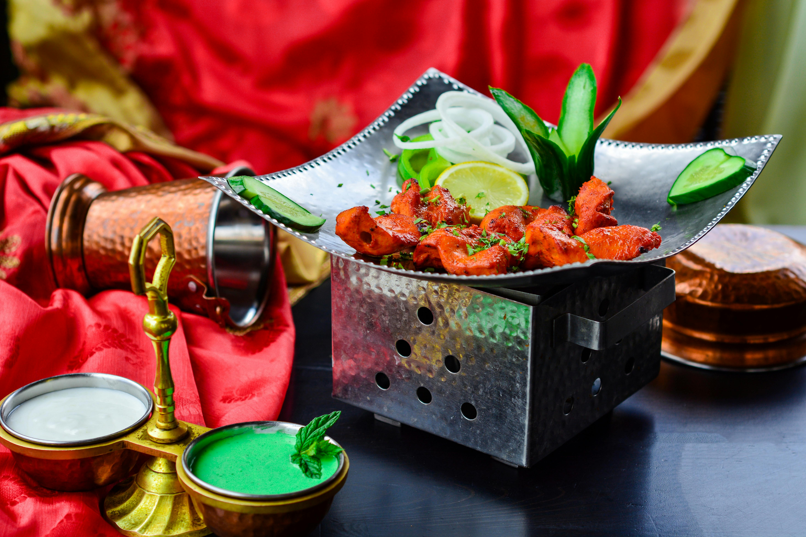

Recipes
.jpg)
Butter Chicken
Ingredients:
- Chicken
- Butter
- Tomatoes
- Cream
- Spices
Instructions:
- Marinate the chicken with spices.
- Cook the chicken in butter until golden brown.
- Add tomatoes and cook until soft.
- Blend the tomatoes to make a smooth sauce.
- Add cream and cooked chicken to the sauce.
- Simmer until the chicken is fully cooked.

Chicken Tikka Masala
Ingredients:
- Chicken
- Yogurt
- Tomatoes
- Onions
- Spices
Instructions:
- Marinate the chicken in yogurt and spices.
- Grill the chicken until cooked.
- Prepare a sauce with tomatoes, onions, and spices.
- Add the grilled chicken to the sauce and simmer.

Paneer Tikka
Ingredients:
- Paneer (Indian cottage cheese)
- Yogurt
- Spices (like tandoori masala)
- Lemon juice
Instructions:
- Marinate the paneer in yogurt, spices, and lemon juice.
- Grill or bake until slightly charred and cooked through.

Samosa
Ingredients:
- Potatoes
- Peas
- Spices
- Pastry dough
Instructions:
- Prepare a spiced potato and pea filling.
- Roll out the pastry dough and cut into triangles.
- Place the filling in the center and fold the pastry.
- Fry or bake until golden brown.

Chicken Tandoori
Ingredients:
- Chicken
- Yogurt
- Tandoori spices
- Lemon juice
Instructions:
- Marinate the chicken in yogurt, tandoori spices, and lemon juice.
- Grill or bake until fully cooked and slightly charred.

Garlic Chicken
Ingredients:
- Chicken
- Garlic
- Ginger
- Soy sauce
- Spices
Instructions:
- Marinate the chicken in garlic, ginger, and soy sauce.
- Stir-fry the chicken with additional spices until cooked through.